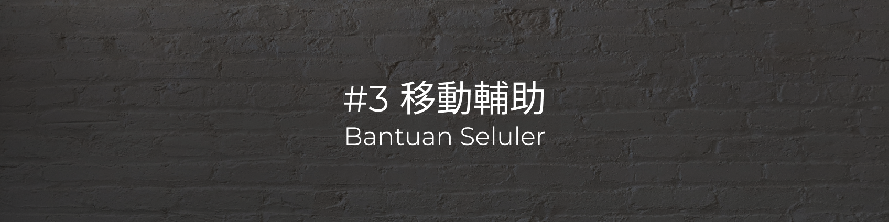

- 固定床位、調整床面高度、放下床欄
Perbaiki tempat tidur, sesuaikan ketinggian tempat tidur, dan turunkan rel tempat tidur - 將枕頭移至肩膀下
Pindahkan bantal di bawah bahu - 將雙手抱胸
Letakkan tangan Anda di sekitar dada - 三階段向側臥的另一邊移動並屈膝：頭頸部、腰部、腿部（如：要翻身至右側，應先將患者向左移，並將患者左腿屈膝）
Tiga tahap bergerak ke sisi lain dari samping dan menekuk lutut: kepala dan leher, pinggang, kaki (mis. berguling ke sisi kanan, pertama gerakkan pasien ke kiri dan tekuk kaki kiri pasien) - 一手放手臂，一手放膝蓋，將身體翻身 30 度
Dengan satu tangan di satu tangan dan satu lutut di tangan lainnya, putar tubuh Anda 30 derajat - 在以下位置放置枕頭：背後、小腿下、兩膝蓋之間、手臂與胸之間
Letakkan bantal di tempat-tempat berikut: di punggung, di bawah betis, di antara lutut, di antara lengan dan dada - 將肩膀自身體下方挪出、耳朵自頭部下方挪出，避免壓傷
Jauhkan bahu dari bawah tubuh dan jauhkan telinga dari bawah kepala agar tidak terjepit
- 兩階段移位（腿部、上半身），將患者的身體靠近自己
Pengangkatan dua tahap (kaki, tubuh bagian atas) yang mendekatkan tubuh pasien dengan Anda - 將小腿移至床下
gerakkan kaki bagian bawah di bawah tempat tidur - 一手扶腰部、一手扶頸部，讓患者坐起
Pegang pinggang dengan satu tangan dan leher dengan tangan lainnya, biarkan pasien duduk - 較靠近輪椅的那一隻腳，放進輪椅踏板中間
Tempatkan kaki lebih dekat ke kursi roda di tengah pedal kursi roda - 雙手拉住褲頭，側轉將患者移至輪椅上
Pegang celana dengan kedua tangan, putar ke samping dan pindahkan pasien ke kursi roda - 站在輪椅後方，將褲頭往上拉讓患者往後坐穩
Berdirilah di belakang kursi roda, tarik bagian atas celana agar pasien dapat duduk dengan kokoh - 放下輪椅腳踏板，將患者雙腳放在踏板上
Turunkan sandaran kaki kursi roda dan tempatkan kaki pasien pada sandaran kaki - 扣上輪椅的安全帶
Kencangkan sabuk pengaman kursi roda